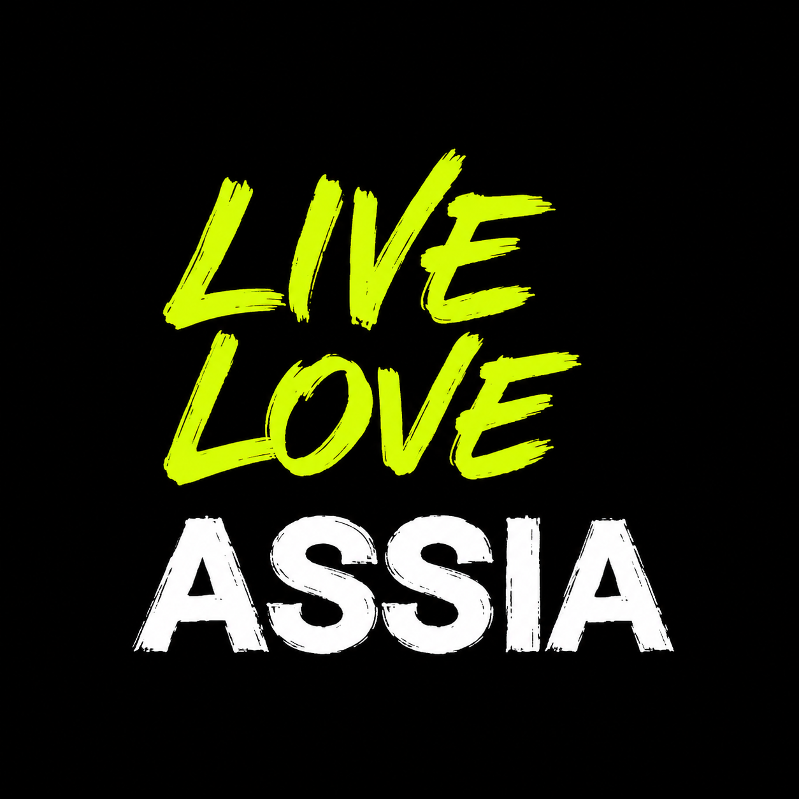
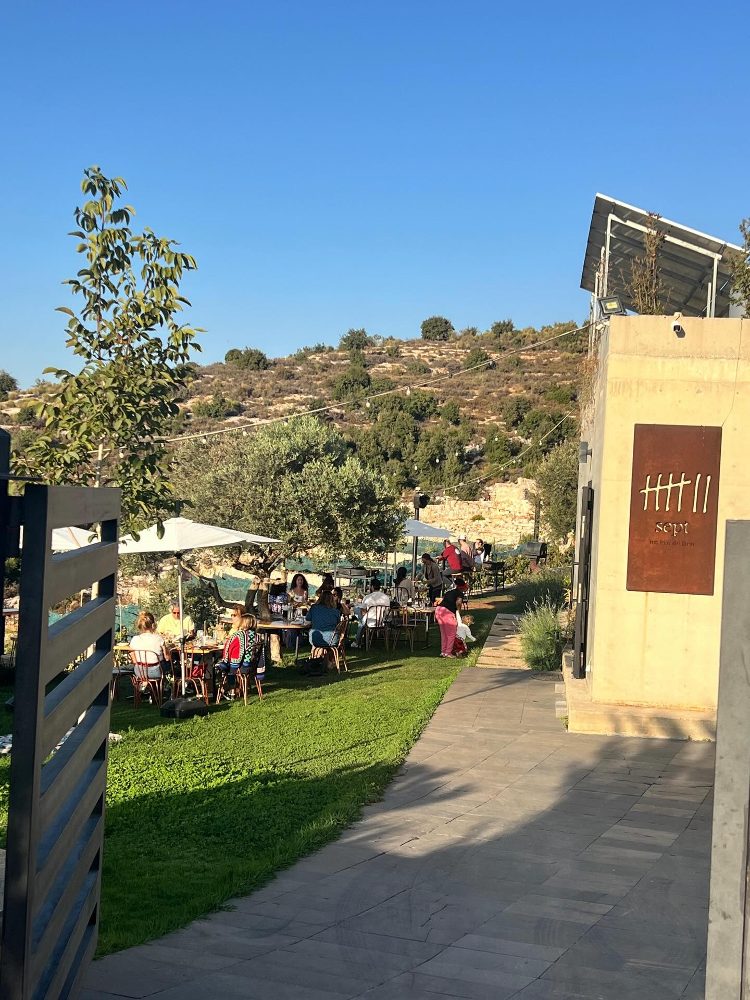

01
HERITAGE
The Old Houses
Wander through the charming narrow streets of Assia's historic center, lined with traditional stone houses and artisan workshops.
Discover more
DISCOVER ASSIA
Nestled in the beautiful Batroun District of Lebanon, Assia offers breathtaking landscapes, rich history, and authentic Lebanese hospitality.

ROOTED IN HERITAGE. SURROUNDED BY NATURE.
Known for its stunning natural beauty and peaceful atmosphere, Assia offers breathtaking views of the Mediterranean Sea and the surrounding mountains. The name of Assia ( ܐܣܝܐ ) means Doctor in Suryoyo and Aramaic.
It is a picturesque town in the Mountains of Batroun, located on a high mountain at an altitude (with its outskirts) from 750m to approximately 1100m. It covers an area of 945 hectares, but the area of the village is in reality more than that — about 975 hectares — placing it among the first five ranks of the largest areas in the Batroun District.
The town of Assia is bordered by more than 12 villages, and it is considered the largest area in the Batroun district in terms of the number of villages surrounding it. They are: Tartej, Hadtoun, Rasha, Alali, Marah Al-Hajj, Chobtine, Zan, Kfarshleiman, Helta, Jebla, Dael, Aura, Qandoula, Beshtoudar, Bchaaleh, Nahla, ...
It can be reached from Batroun via:
Ijdabra, Bejdarfel, Ain-Aya, Kour, Kfarhtna, Zan, Assia = 25
km, 45 minutes.
Ijdabra, Bejdarfel, Batroun-Tannourine Road, Assia = 20 km,
20–30 minutes.
It is 72 km away from Beirut.
It is 46 km away from Tripoli.
It is 34 km away from Jbeil.
Assia has about 25 neighborhoods and three regions (Yarita,
Sherife, Brarekha).
It is an estate famous for making pottery by hand using traditional methods since BC. When the Phoenicians came, they brought with them the wheel that is currently used in pottery making. However, the town of Assia did not use this machine, and it remained in the old traditional method without any kind of development intervening in it, and the industry remained the focus of attention of this town and its connection from Lebanon to the whole world.
Also, on the outskirts of Assia there is a waterfall, located close to the borders of the villages of Rasha, Alali and Hadtoun. According to the water maps of the district, the course of that river is also called the Joz River, and it is considered one of the Lebanese water resources, especially after the lighting of MTV Lebanon (Lebanese Channel) on it, which directs its course to the valley of Ain-Aya.
In the town there are all types of tourism: in winter with snow and cold weather, and in summer with fresh air breezes and cool weather in the evening, which makes you feel comfortable in the coastal weather. We are talking about the most beautiful village in Batroun: we are talking about the town of Assia!
A forgotten village, but it is very beautiful and carries with it the story of a people who loved pottery and devoted their lives to it. Other than that, the village’s houses are stone and red brick, and they are hundreds of years old, and they add another beauty to the Village’s beauty.
As for religious tourism: from the ancient and beautiful Monastery of Saint Assia, a monk lived there in ancient times who helped all the sick. They say that the estate bears the name of Haldir and the monk. And the Church of Saint George and the other churches — as the town of Assia has about 10 churches — are indispensable. Add to that the generosity and hospitality of its people.
The Assia Castle history part 1
Since ancient times, there was a castle or, in other words, a
palace of the kingdom at this location. Only a few stones
remain of it next to Saint George church. If we walk around
the church, we see the entrance to a cave (the treasury of
Saint Assia), and on the other side, we see the sarcophagi
where the children and servants of the kingdom were buried. We
also see, on another side, but blocked with stones, the
entrance to a tunnel through which the queen would escape from
the castle to the "Shumays Valley" during attacks (according
to history). The queen who owned the castle here also owned
the castle in Beshtoudar, which is called the "Fortress
Castle".
The Fortress Castle history part 2
In the area of Beshtoudar, there is a mountain called "Mount
Al-Hajar" (the mountain of stone). In it, there is a castle
called the "Fortress Castle" (Qal'at Al-Hisn). This castle is
located on the highest peak in the region. From there, the
whole region can be observed. Inside the castle, there are 3
reservoirs. There are also very deep rooms. According to
history, the queen who owned the castle in Assia also owned
this castle in Beshtoudar. She used to come down from the
castle here (Al-Hisn) and go to the castle in Assia through a
tunnel that connected the two castles. This is according to
what the elders of the region say.
For tourism lovers, the tourist areas in Assia are:
Hanna's & Jabbour Pottery
Lady of Alaa Waterfall and Lake
Churches
Old houses
Great views
Ain Blat
Hiking
For other information about the village, you can contact the
municipality at:
Assia Municipality:
+961 6 705 048
Explore the most beautiful and interesting parts of our charming town.
Wander through the charming narrow streets of Assia's historic center, lined with traditional stone houses and artisan workshops.
Discover more
Enjoy breathtaking views of the Mediterranean Sea and surrounding mountains from this spectacular vantage point.
Discover more
Visit the traditional pottery workshops where local artisans create beautiful handmade pieces using ancient techniques passed down through generations.
Discover moreWhether you come for the scenery, the heritage, or the peaceful atmosphere, Assia is ready to welcome you.

Known as the Maronite Church of Saint George. It is distinguished by its wonderful beauty and large size, holding the first place in terms of the largest church of Saint George in the Batroun district...
Read More
A monastery built during the days of the Roman Empire. A monk lived in it who was the doctor of the region, and it is said that he is Saint Assia, so the village was named after it...
Read More
A well on the foundations of the church, carved into the ancient rock, built on a Roman structure before the 17th century. Our Lady of "Hidak al-Qata'" — now known as Our Lady of the Castle.
Read More
She is the Iraqi Saint Fassa. She has only two churches in the whole world: a church in Iraq, and Our Lady of Fassa in Lebanon - Assia. Fessa was a village and one of the richest regions, known as the Kingdom of Fessa.
Read More
Here, the stones tell a story of a past untouched by time, a resilience deeply etched into the earth of this village, nestled amidst its mountains and the silence of nature.
Read More
Saint Thomas Monastery, one of the few important religious and historical places in Lebanon named after Saint Thomas. The monastery dates back centuries and is an attractive point to enjoy the tranquility.
Read More
One of the top 100 water features and sources in Lebanon. The Waterfall and Pool of Our Lady of Fortress is one of the most prominent natural and tourist destinations in the region and Lebanon.
Read More
Assia Pottery (فخار آسيا) is a traditional form of ceramic craft practiced in the village of Assia in the Batroun district of northern Lebanon. Over generations, potters in Assia have preserved a technique...
Read More
Ain El Balat is one of the beautiful areas in Assia. It is distinguished by springs of fresh water that emerge from the mountains and constitutes a source of refreshment for visitors.
Read More
The site is distinguished by its breathtaking natural beauty, situated on a mountaintop, offering a stunning view of central Batroun and the coast. The entire region can be observed from this strategic vantage point.
Read More
The site is distinguished by its breathtaking natural beauty, situated on a mountaintop, offering a stunning view of central Batroun and the coast. The entire region can be observed from this strategic vantage point.
Read More
One of the titles given to the Virgin Mary, expressing believers’ faith in her role as an intercessor and helper in times of hardship and distress. This name reflects people’s trust in Mary’s love and mercy.
Read More
Nestled above the village of Bechtoudar in Lebanon’s North Governorate (Batroun District), the site known as Kal‘at el Ḥosn — literally “Castle of the Fortress” — is a hilltop ruin and vantage point rather than a fully-standing medieval castle.
Read MoreEXPLORE MORE



FIND US
For directions or more information, contact the Assia Municipality at: +961 6 705 048